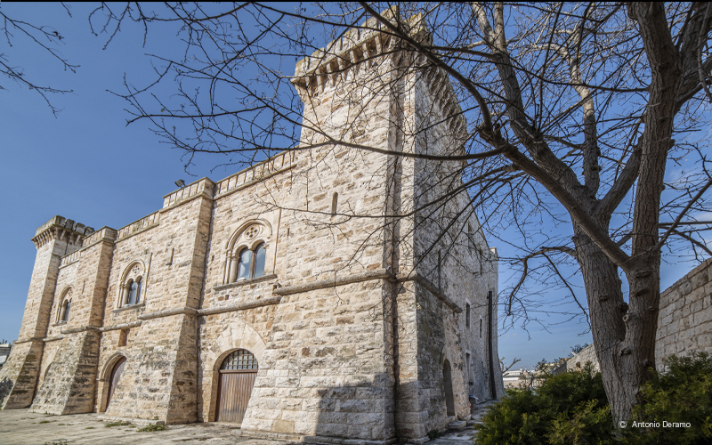
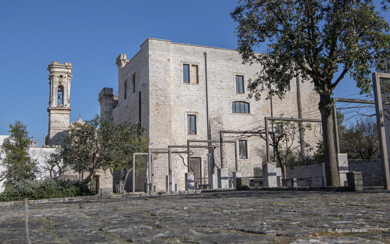
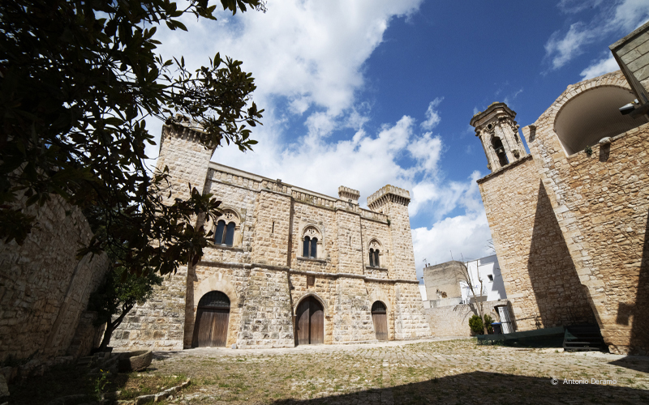

|

La costruzione sorse nella prima metà del ‘400, come avamposto di controllo e |
di difesa. Nell’androne è presente una lastra di pietra calcarea riportante lo stemma della famiglia Acquaviva, databile al 1456. Nel 1504, come attesta una ulteriore lastra calcarea posta sempre nell’androne, era di proprietà del ricco banchiere Heronimo Centurione. Nel 1609 il palazzo venne acquistato da Michele Vaaz, fondatore del paese, e rimase di proprietà della famiglia fino al 1667, quando il feudo fu venduto al Regio Consigliere Antonio De Ponte. Questi trovò l’edificio quasi cadente, e avviò i lavori di restauro, come testimonia l’incisione sul portale d’ingresso, portante la data del 1675, per utilizzarlo come azienda agricola.
|
Nel 1791 l’edificio passò alla famiglia Caracciolo di Vietri e intorno al 1860 fu
sottoposto a ulteriori lavori, che ne ridisegnarono il prospetto in stile goticizzante, sul modello di un castello tardomedievale. La famiglia restò in possesso del castello fino al 1971, per poi cederlo al Comune di Sammichele di Bari.  |
Gli ultimi lavori di restauro sono stati effettuati tra il 1991 e il 2002, con l’eliminazione delle pareti divisorie create durante gli interventi precedenti, la pulitura delle pareti esterne e la rimozione degli intonaci nelle sale interne, in modo da riportare la struttura a un aspetto quanto più vicino a quello originario.
|

All’interno il Castello è costituito da quindici ambienti suddivisi tra il piano |
terra, il primo ed il secondo piano, coperti con volta a crociera in conci di pietra, tranne quello centrale a piano terra, con volta a botte, e la corrispondente sala al piano superiore, a tutta altezza. Dal 1974 le sale del Castello ospitano il Museo della Civiltà Contadina. Nel museo sono allestiti materiali che documentano le prime frequentazioni umane del territorio e oltre cinquemila oggetti che rappresentano la testimonianza viva della civiltà contadina locale. Gli attrezzi sono accostati per settori, in modo da illustrare di volta in volta le varie fasi dei lavori nei campi, dei lavori artigianali e domestici. Il Castello è spesso sede, sia nelle sale interne che nel giardino esterno, di mostre, attività didattiche, visite guidate, manifestazioni ed eventi. |
|---|